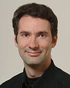

Dr Cédric Notredame, PhD.

|
Dr Cedric
Notredame Centre de
Regulacio Genomica (CRG) |
Phone: Fax: Email: URL: |
+34 93 316 02 71 +33 661 312
531 |
|
Personal Information |
Nationality: French Born 30/10/70, Married |
|
Education |
1998 EMBL-EBI PhD in Bioinformatics. Work
carried out in the laboratory of Des Higgins, at the European Molecular
Biology Laboratory (EMBL-Heidelberg) and at the European Bioinformatics Institute
(EBI-Cambridge) PhD awarded by 1993 Université
Paul Sabatier Master in Biotechnologies With honours 1990-1992 Université
Paul Sabatier Toulouse,
France Degree of
Biochemistry These
degrees were both awarded with the highest possible distinction
("Mention Très Bien"). |
|
Professional Experience |
2007-… CRG Barcelona, Spain Senior Group Leader, Bioinformatics and Genomics programme, Centro
de Regulacio Genomica, Barcelona, Spain My group (5 people) focuses its work in the development of multiple sequence alignment comparisons and their various applications. 2005 - 2007 IBDM-CNRS Marseilles, France Research Investigator, First Class,
CNRS-France Consultant for the Pharmaceutical
Industry (Sanofi-Aventis). In charge of small group (4 people) funded by Sanofi Aventis. Our work is dedicated to the development of novel sequence analysis method using structural and genomic information. Visiting Professor, Social
Sciences Department, In collaboration with Profs Eric Widmer and Jacques-Antoine Gauthier, we develop novel methods for the comparison of life trajectories. These methods are inspired by sequence analysis as done in Bioinformatics 2002 - 2003 Aventis Pharna Paris,
France Consultant for Aventis-Pharma Consultation on the setting up of a bioinformatics framework within Aventis. Consultation on punctual projects that require bioinformatics techniques. Expertise on collaborations with the Academia. 2001 - 2005 Lausanne University Lausanne, Switzerland Assistant Professor in Bioinformatics, Lausanne University Member of the Swiss Bioinformatics Institute Executive Board. Development of a new pre-graduate curriculum in bioinformatics. Setting up of new projects dedicated to the development of sequence analysis algorithms. 1999 - 2005 IBDM-CNRS,
Marseilles,
France Research Investigator, Second
Class, CNRS-France Within
the group of Jean-Michel Claverie (CNRS-UMR 1889), Development of new
algorithms for the combination of sequential and structural information within
multiple sequence alignments. Development of new methods for simultaneously
comparing several genomes and incorporating heterogeneous sources of
experimental information and annotation. Head of a small group (three people)
dedicated to the study of the human kinome by bioinformatics means. 1999 - 2001 Université Marseille-Luminy Marseilles,
France Assistant Professor in Bioinformatics Member of the department of bioinformatics, setting up of new courses. Research carried out in the laboratory of Prof. Jean-Michel Claverie. Focus on multiple sequence alignments. 1998 - 1999 National Institute of Medical Research Research Associate Post Doc with Dr. Jaap
Heringa and Dr. Willie Taylor in the department of Mathematical
Biology at the National Institute for Medical Research in 1998 I.S.R.E.C. Lausanne,
Switzerland Post-Doc Under the supervision of Dr
Philip Bücher, I maintained the PROSITE/Profile database, and developped new
algorithms for the generation of protein profiles. 1994 - 1998 European Molecular Biology Laboratory, PhD Conception
of multiple sequence alignment algorithms, under the supervision of Dr. Des Higgins.
Strong emphasis on the use of Genetic Algorithms and related techniques. 1992- 1993 Université Paul Sabatier Toulouse, France Pre-graduate Master degree in the group of
Prof F. Amalric at the 'Laboratoire de Biologie Moléculaire des Eucaryotes' in
|
|
Special Awards |
In 1993, on the bases of my results, I was awarded an E.M.B.L. PhD fellowship. These grants that are among the most prestigious in Europe have four years duration. |
|
Teaching Experience |
EMBO/UNESCO course of Bioinformatics, Lima, Peru,
2003 European
Genetics Association annual bioinformatics Course, EMBnet 'Hands on' Courses. ISREC, Lausanne 1998, 1999,2000, 2001,2002. SANBI, South Africa, 1999 Master Courses Lausanne University: 2001, 2002, 2003, 2004, 2005 Madrid University: 2003, 2004 Calgiari University: 2006, 2007 |
|
Servers
and Programs |
|
|
International
Conferences Editorial
Reponsabilities |
Invited
Speaker -WABI:
Workshop On Algorithms in Bioinformatics (2006) -ISMB: Intelligent Systems in
Bioinformatics (2005, 2006) -Workshop on Education in Bioinformatics
(2004). -Congress on Evolutionary Computation (2004). -Genetic and Evolutionary Computation
Conference (2004). Editorial
Responsabilities -Associate Editor of
"Applied Bioinformatics" |
|
Publications |
Peer Reviewed Publications 1 Notredame, C. and D.G. Higgins, SAGA: sequence alignment by genetic algorithm. Nucleic Acids Res, 1996. 24(8): p. 1515-24. 2. Notredame, C., E.A. O'Brien, and D.G. Higgins, RAGA: RNA sequence alignment by genetic algorithm. Nucleic Acids Res, 1997. 25(22): p. 4570-80. 3. Notredame, C., L. Holm, and D.G. Higgins, COFFEE: an objective function for multiple sequence alignments. Bioinformatics, 1998. 14(5): p. 407-22. 4. O'Brien, E.A., C. Notredame, and D.G. Higgins, Optimization of ribosomal RNA profile alignments. Bioinformatics, 1998. 14(4): p. 332-41. 5. Notredame, C., D.G. Higgins, and J. Heringa, T-Coffee: A novel method for fast and accurate multiple sequence alignment. J Mol Biol, 2000. 302(1): p. 205-17. 6. Notredame, C., Mocca: semi-automatic method for domain hunting. Bioinformatics, 2001. 17(4): p. 373-4. 7. Dietmann, S., J. Park, C. Notredame, A. Heger, M. Lappe, and L. Holm, A fully automatic evolutionary classification of protein folds: Dali Domain Dictionary version 3. Nucleic Acids Res, 2001. 29(1): p. 55-7. 8. Notredame, C., Recent progress in multiple sequence alignment: a survey. Pharmacogenomics, 2002. 3(1): p. 131-44. 9. Poirot, O., E. O'Toole, and C. Notredame, Tcoffee@igs: a web server for computing, evaluating and combining multiple sequence alignments. Nucleic Acids Res, 2003. 31(13): p. 3503-6. 10. Abergel, C., B. Coutard, D. Byrne, et al., Structural genomics of highly conserved microbial genes of unknown function in search of new antibacterial targets. J Struct Funct Genomics, 2003. 4(2-3): p. 141-57. 11. O'Sullivan, O., M. Zehnder, D. Higgins, P. Bucher, A. Grosdidier, and C. Notredame, APDB: a novel measure for benchmarking sequence alignment methods without reference alignments. Bioinformatics, 2003. 19 Suppl 1: p. i215-21. 12. Claude, J.B., K. Suhre, C. Notredame, J.M. Claverie, and C. Abergel, CaspR: a web server for automated molecular replacement using homology modelling. Nucleic Acids Res, 2004. 32(Web Server issue): p. W606-9. 13. Poirot, O., K. Suhre, C. Abergel, E. O'Toole, and C. Notredame, 3DCoffee@igs: a web server for combining sequences and structures into a multiple sequence alignment. Nucleic Acids Res, 2004. 32(Web Server issue): p. W37-40. 14. O'Sullivan, O., K. Suhre, C. Abergel, D.G. Higgins, and C. Notredame, 3DCoffee: combining protein sequences and structures within multiple sequence alignments. J Mol Biol, 2004. 340(2): p. 385-95. 15. Wallace, I.M., O. O'Sullivan, D.G. Higgins, and C. Notredame, M-Coffee: combining multiple sequence alignment methods with T-Coffee. Nucleic Acids Res, 2006. 34(6): p. 1692-9. 16. Armougom, F., O. Poirot, S. Moreti, D. Higgins, P. Bucher, V. Kedaus, and C. Notredame, APDB: a Web server to Evaluate the Accuracy of Sequence Align-ments using Structural Information. Bioinformatics, 2006. 17. Armougom, F., 18. Armougom, F., S. Moretti, O. Poirot, S. Audic, P. Dumas, B. Schaeli, V. Keduas, and C. Notredame, Expresso: automatic incorporation of structural information in multiple sequence alignments using 3D-Coffee. Nucleic Acids Res, 2006. 34(Web Server issue): p. W604-8. 19. Moretti, S., F.
Reinier, O. Poirot, F. Armougom, 20. Moretti, S., F. Armougom, I.M. Wallace, D.G. Higgins, C.V. Jongeneel, and C. Notredame, The M-Coffee web server: a meta-method for computing multiple sequence alignments by combining alternative alignment methods. Nucleic Acids Res, 2007. 35(Web Server issue): p. W645-8. 21. Notredame, C., Recent Evolutions of Multiple Sequence Alignment. PLoS Comput Biol, 2007. 3(8): p. e123. 22. Retelska, D., 23. Gauthier, J., E. Widmer, P. Bucher, and C. Notredame, How much does it cost? Optimization of costs in sequence analysis of social science data. Sociological Methods and Research, 2007. 24. Wilm, A., D. Higgins, and C. Notredame, R-Coffee: A method for Aligning ncRNAs. Nucleic Acids Res, 2008. (in Press). 25. Moreti, S., A. Wilm, D. Higgins, I. Xenarios, and C. Notredame, R-Coffee: a web server for accurately aligning non-coding RNA sequences. Nucleic Acids Res, 2008. In Press. 26. Rausche, T., A. Emde, D. Weese, A. Doring, C. Notredame, and K. Reinert, Segment Based Multiple Sequence Alignment. Bioinformatics, 2008. In Press. 27. Moreti, S., A. Wilm, I. Xenarios, D. Higgins, and C. Notredame, R-Coffee: a web server for accurately aligning non-coding RNA sequences. N.A.R., 2008. In Press. Books and Books Chapters 1. Notredame, C. and C. Abergel, Using Multiple Alignment Methods to Assess the Quality of Genomic Data Analysis, in Bioinformatics and Genomes: Current Perspectives, M. Andrade, Editor. 2003, Horizon Scientific Press. p. 30-50. 2. Notredame, C., Using Genetic Algorithms for Pairwise and Multiple Sequence Alignments, in Evolutionnary Computation in Bioinformatics, B.G. Fogel and D.W. Corne, Editors. 2003, Morgan Kaufmann. p. 60-80. 3. Notredame, C. and K. Suhre, Making Multiple Sequence Alignments with T-Coffee, in Current Protocols in Bioinformatics, Wiley, Editor. 2003. p. 250-275. 4. Claverie, J.M. and C. Notredame, Bioinformatics for dummies. 2003: Wiley Publishing, Inc. 5. Claverie, J.M. and C. Notredame, Bioinformatics for dummies, 2nd. 2006: Wiley Publishing, Inc. . |
|
Languages |
French: maternal. English: fluently spoken, read and written. Spanish: spoken,
read Greek: notions. |